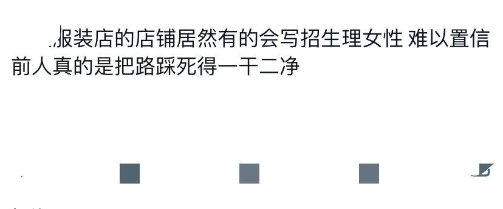

RT @Diamond_Kokoro: 如果一个全性别岗位，声称因为曾有某个女员工能力/私德出了问题，所以招聘要求上写上“不招女员工”，这将是灾难程度的性别歧视。没有一个女性会觉得是某个犯错的女性把自己的路踩死了，因为大家都会知道真相是男性在歧视女性。同样，在跨儿被顺直歧视的时…


如果一个全性别岗位，声称因为曾有某个女员工能力/私德出了问题，所以招聘要求上写上“不招女员工”，这将是灾难程度的性别歧视。没有一个女性会觉得是某个犯错的女性把自己的路踩死了，因为大家都会知道真相是男性在歧视女性。同样，在跨儿被顺直歧视的时候，我希望你们不要觉得是“前人把路踩死了”。多 https://t.co/u9gldfOvQ6